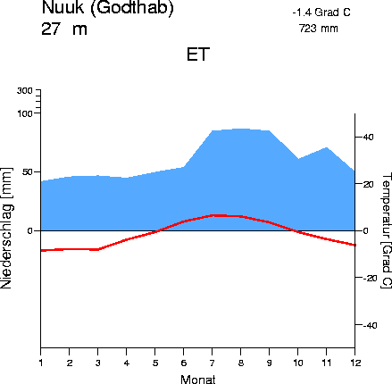
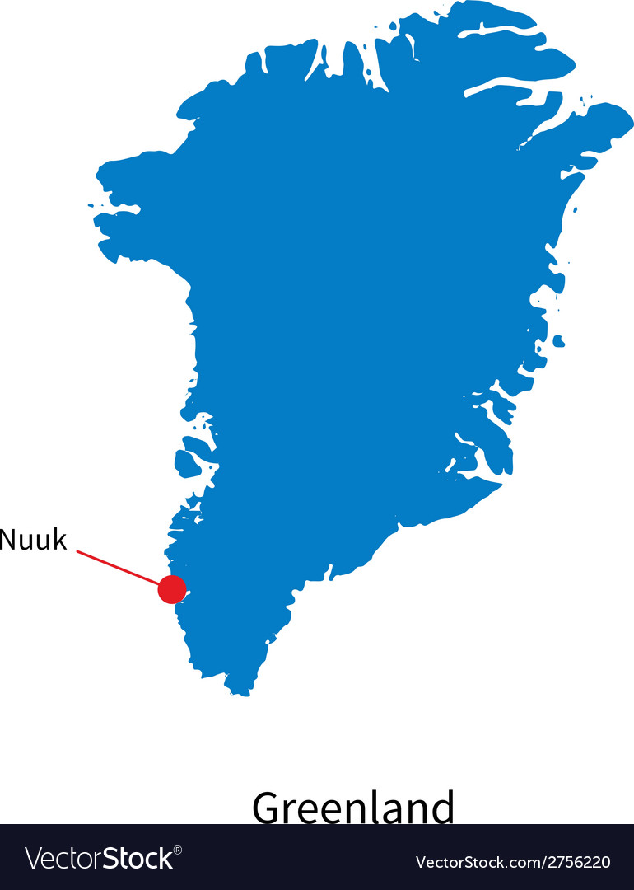
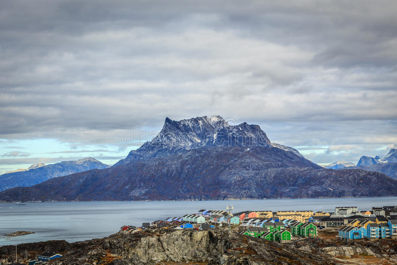

Wereldreis Klimaatgebeiden
(Aardrijkskunde PO)
Poolklimaat
Na een nachtje in Londen gaan we naar Nuuk, Groenland
Klimaat & Klimaatgrafiek
Nuuk heeft een poolklimaat, dus ook in de zomermaanden kan het soms kouder dan 0 graden zijn. Er zijn heeft weinig planten/bomen in Nuuk, omdat het zo koud is. In
de wintermaanden is het heel lang donker, en op sommige dagen is het 24 uur donker. In de Zomermaanden is het dan het tegenovergestelde van de wintermaanden, dan is het heel lang per dag
licht.

Een Klimaat grafiek van Nuuk.
Ligging
Nuuk ligt in Groenland. Het duurt 8uur en 20min om naar Groenland te komen via Amsterdam.

Accomodatie
Hotel Sømandshjemmet Nuuk
Deze hotel in Nuuk is in een prachtige locatie, het is dicht bij hoge bergen, maar ook dicht bij musea in het centrum van Nuuk.

Vegetatie
In Nuuk groeien er weinig/geen planten, omdat het te koud is.
